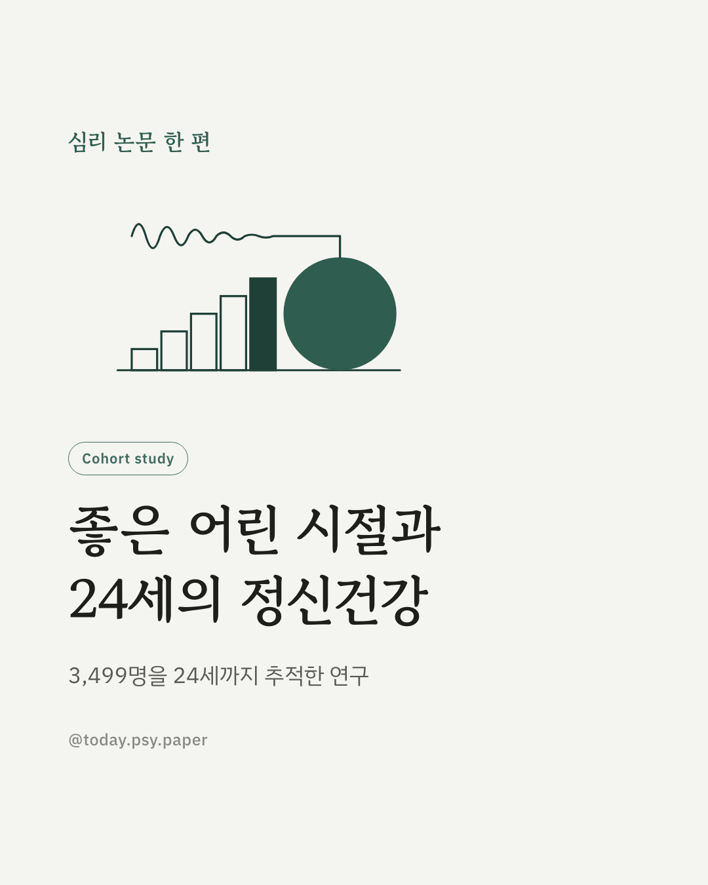
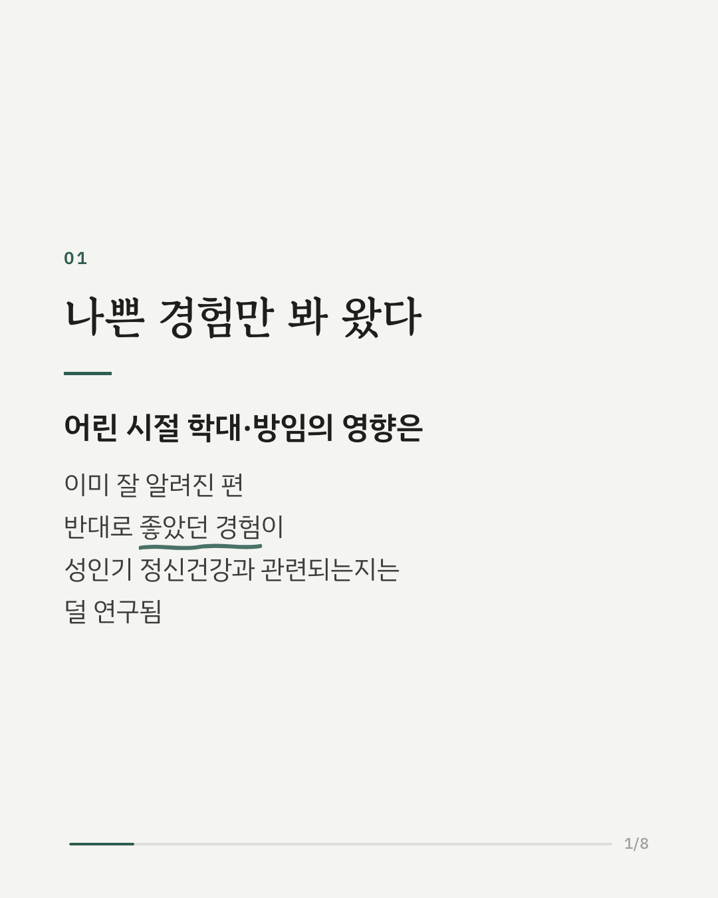
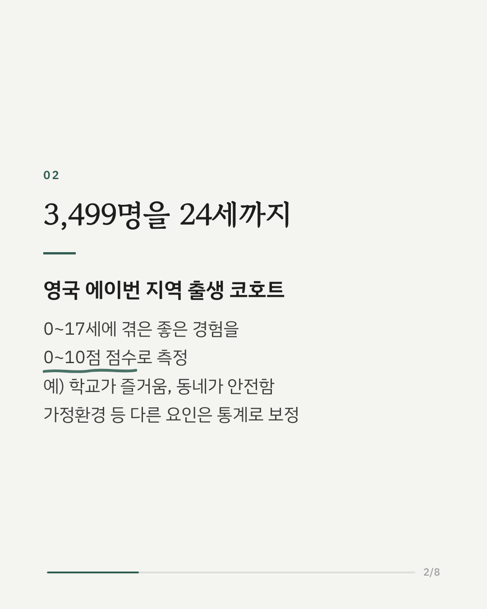
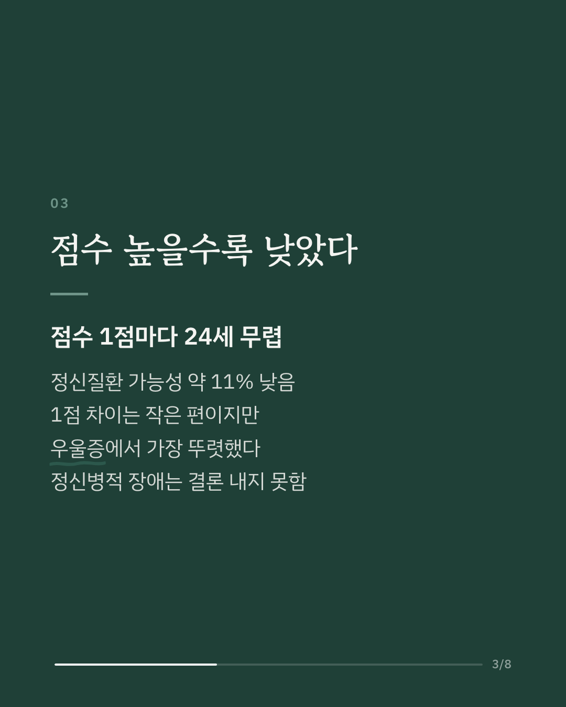
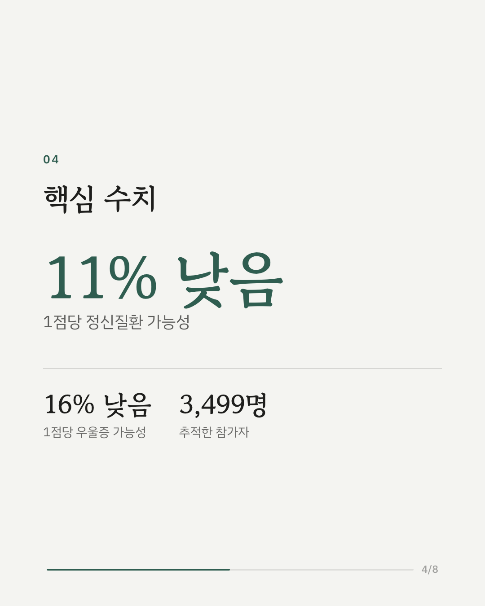
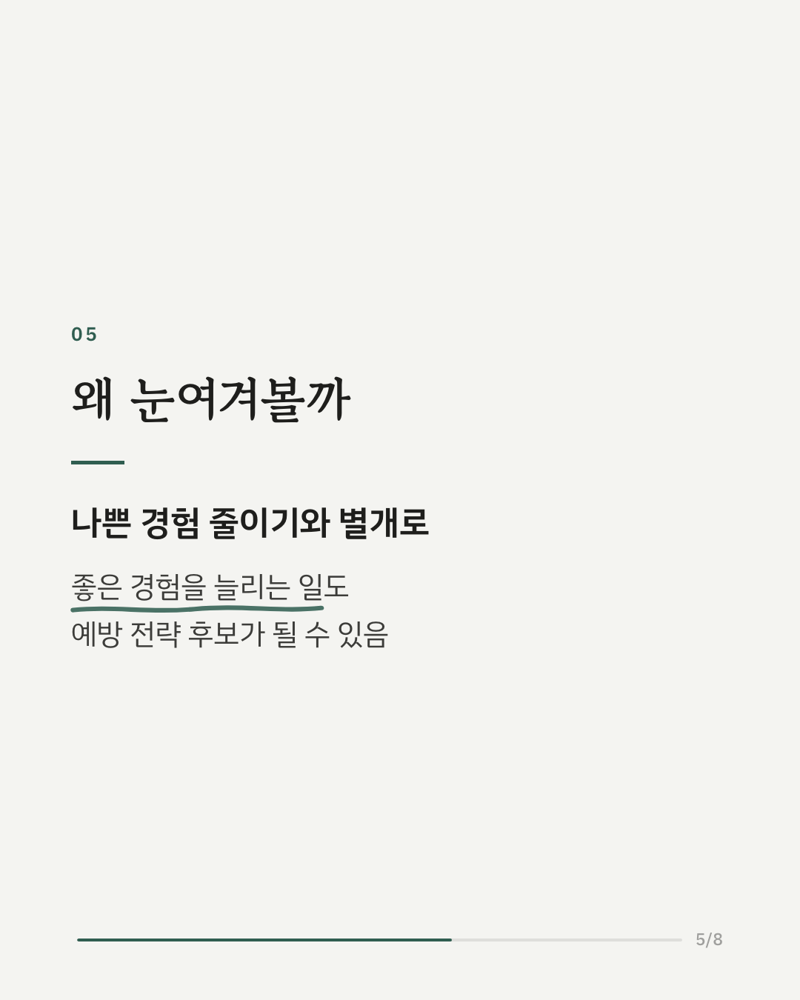
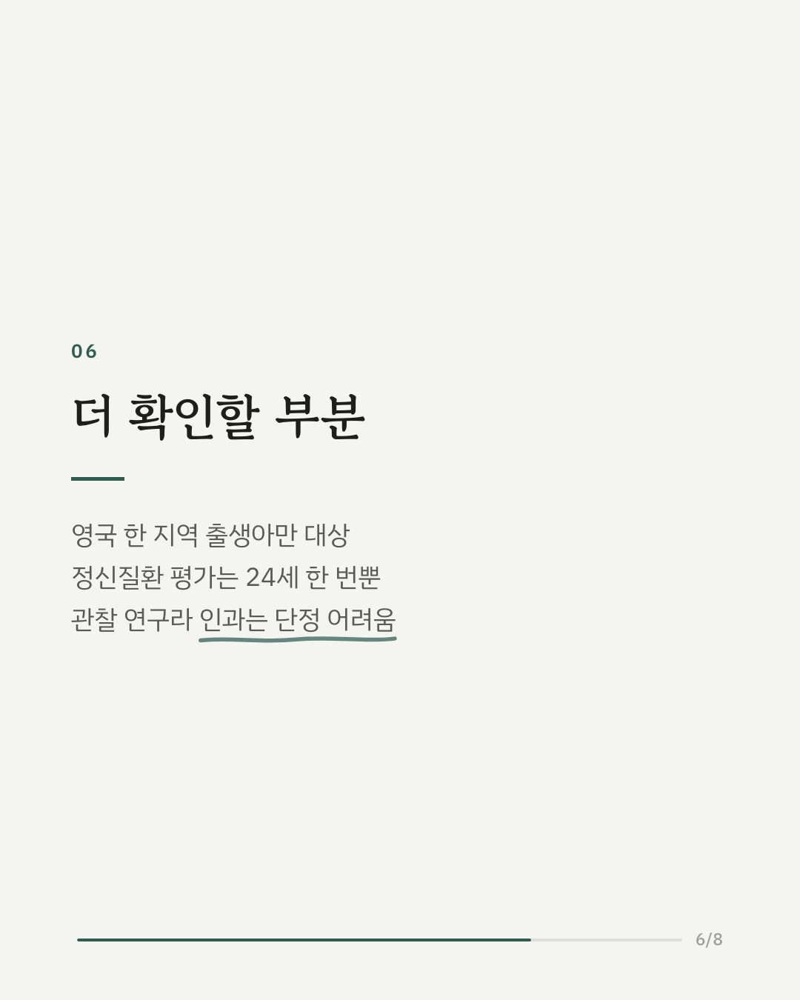
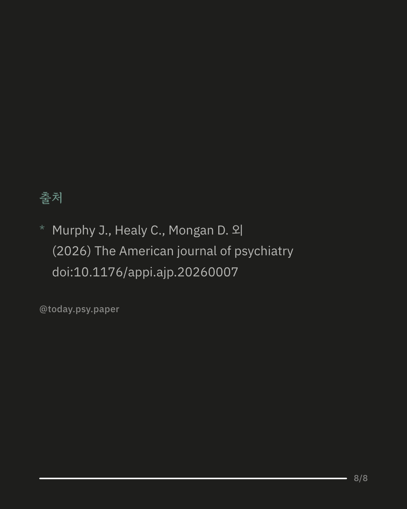

어린 시절의 학대나 방임 같은 나쁜 경험이 정신건강에 영향을 준다는 연구는 많습니다. 이 연구는 반대로, 학교가 즐겁거나 동네가 안전하다고 느낀 것 같은 좋은 경험이 성인기 우울증·불안과 관련되는지 살펴봤습니다. 영국 출생 코호트(ALSPAC)의 3,499명을 대상으로 0~17세의 좋은 경험을 0~10점으로 매기고, 가정환경 등 다른 요인을 통계로 보정한 뒤 24세의 정신질환 여부와 비교했습니다. 점수가 1점 높을 때마다 정신질환 가능성은 약 11% 낮았고, 우울증은 약 16%, 범불안장애는 약 9% 낮았습니다. 정신병적 장애와의 관련은 결론이 나지 않았습니다. 연구진은 나쁜 경험을 줄이는 것과 함께 좋은 경험을 늘리는 일도 예방 전략으로 검토할 만하다고 봅니다. 다만 영국 한 지역에서 태어난 아이들만 대상이었고, 관찰 연구여서 좋은 경험이 정신질환을 직접 줄였다고 단정할 수는 없습니다. 출처: The American Journal of Psychiatry (2026), 'Evaluating the Effect of Positive Childhood Experiences on the Risk of Psychiatric Disorders in Early Adulthood' DOI: 10.1176/appi.ajp.20260007 #임상심리 #정신건강정보 #심리학연구 #논문리뷰 #아동기경험 #발달심리 #우울증 #불안장애
python3 publish.py 42870347